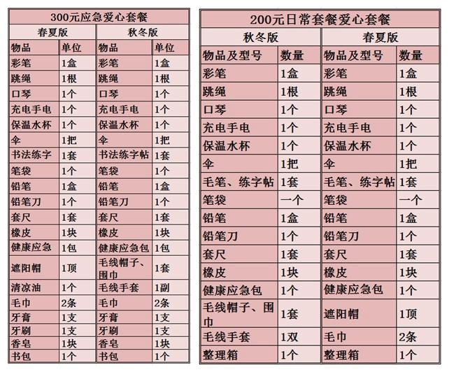
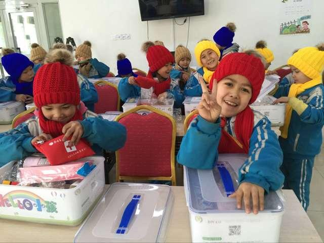
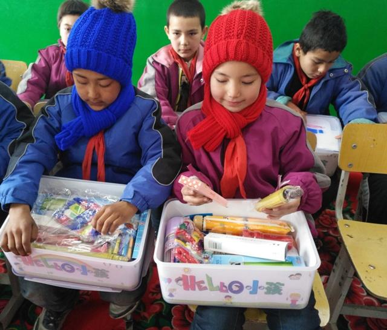

HELLO小孩”爱心套餐是中国儿童少年基金会面向广大贫困家庭儿童和留守儿童以及因自然灾害、突发事故的儿童于2015年底启动的公益项目。包括日常学生套餐和灾后应急套餐两款，根据季节不同，又分为春夏和秋冬两个搭配方案。
日常套餐包括彩笔、口琴、帽子手套、健康应急包等16种学习生活必需品，灾后应急套餐在日常套餐的基础上，又增加了香皂等灾后卫生防疫必需品以及书包等学习用品，能够帮助孩子们顺利渡过安置期。
HELLO小孩”爱心套餐给贫困家庭儿童、留守儿童带来社会各界的温暖关怀，套餐里的文体生活用品能为他们的生活增添一抹亮丽的色彩。截至2016年，“HELLO小孩”共为贫困留守儿童、自然灾害受灾家庭、贫困弱势儿童发放5万余份爱心套餐。
HELLO小孩执行两年以来，收到了许许多多受助儿童的感谢信，以及孩子们用自己稚嫩的画笔画出来的美好生活。孩子们在感谢信中说到：你们的爱心资助，让我们感受到你们的善良和仁爱，也让我们深深的感受了来自社会大家庭的温暖，看到了生活的光明和希望。我们知道，每一元善款都来之不易，你们节省下的善款汇聚成热切的爱心，温暖着每一个受资助的孩子的心。
【发票获取方式】
中国儿童少年基金会将为捐款金额100元（含）以上开具捐赠收据，需要捐赠收据的蚂蚁金服公益爱心用户须将(捐赠人姓名、开票抬头、金额、截图、电话、地址等信息发至zhongchou@cctf.org.cn。感恩您的信任和理解。
【执行机构简介】
中国儿基会是我国第一家通过募集社会资金，专注于发展儿童少年教育公益事业的社会团体，是民政部评定的5A级基金会。以“为抚育、培养、教育儿童少年，辅助国家发展儿童少年教育福利事业”的宗旨。
【项目备案说明】
该项目已在【慈善中国】备案，公开募捐活动备案编号：531000005000090795A17006，您可登录【慈善中国】查询。 慈善中国，即全国慈善信息公开平台，于2017年9月4日正式开通，是民政部依据《慈善法》关于“信息公开”要求而建设的统一信息平台，用于慈善组织、慈善信托受托人等参与主体面向社会公开慈善信息。
-
第一周 2018年1月1日啦啦啦
哩哩哩
-
第二周 2018年2月1日叽叽叽
吱吱吱
-
第二周 2018年3月1日滴滴滴
哒哒哒